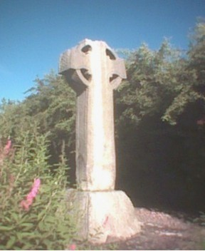

THE CROSS
MY ANCHOR
from an anchorhold in Ireland.
"I see a wide strand, clean, bare, empty, the tide far, far out, the pale waters withdrawn, held back, a gleaming line on the horizon. Lambent, translucent, colourless sky. The night stars have faded, the morning star not yet come. It is as if all is suspended, all nature pauses. The angels and saints hold their breath; all heaven waits and watches.......
"Will you not join us, the quiet, quiescent ones, those who give our lives in ‘silence and solitude, persevering prayer and penance'? We who are the channels of the peace and love that alone can turn the tide and bring the healing waters flowing strong and pure back to a hurting, needful world? "Anchorites, solitaries, hermits, enclosed contemplatives in religious Orders, hold the world in prayer to God in their hidden, given lives, by their love of Him and of all mankind and creation. A nurturing and a healing, reaching out to humanity as the arms of the Risen Jesus stretch out to embrace all.
Will you not join us?
"So that the tide may slowly , softly, silently turn back to the thirsty earth, and the angels sing and joy, and the Morning Star shine out silvering true, heralding the Sun cresting golden over the earth's rim..... Will you not join us?"

Nestled into the nurturing, green-shawled breast of an Irish mountain, the anchorhold tucks itself away from human eyes. The rough and rocky track leads steeply only here.
Crimson, purple-hearted fuchsias shelter and encircle it... In Irish Gaelic, deora dé, tears of God
Enclosed then by wild, sweet meadow, and woods, where
spearmint grows fresh and tall, and gooseberries fruit among myriad wild flowers. Trees abound - the protection of rowan, holly, box, ash, hawthorn......
Gilded by daffodils, snow of wood sorrel, soft purple of wild violets ........blue-mist of bluebells, bright buttercup gold.....tall spires of purple foxgloves..... rich hues of autumn......Pleached white of winter......The seasons unfold as God reassures of His omni-presence, His unfailing love.
And, high as it is, the door opens onto a wide vista of mountains over the deep valley, the village and church tiny far below. And always, the sky, the vast vaults of heaven, ever-changing, Clear lambent blue.. cloud-castled... leaden rain..... stars and moon following His will.....
Here, a consecrated anchoress, a solitary nun, measures out her days in silence and solitude and persevering prayer, by the wide fireside, where the Sacred Heart lamp burns day and night....... Or at the open door, threading prayers with rosary beads, weaving St Brigit Crosses, knitting, stitching, hands and heart busy. She is alone on the mountain; birds, the wild flowers and creatures are her companions, birdsong, the stream's liquid melody, and tree-winds her music. Prayer is woven into every deed and act. Her life is simplicity. Her out-goings seldom, for essential reasons only.. and few find their way here.
In the ancient rhythm of monastic life, where the day is punctuated by the sevenfold Divine Office, prayer and work merge. There is no division. All becomes prayer in solitude.
Growing flowers and fruit and herbs and vegetables, an old, old part also of monastic life, close to God in the tending of the earth.
By the inner gate, a wooden rosary with the Risen Jesus at its heart sways in the breeze, and by the big gate, a bare wooden cross, where pale primroses lift their faces to Him, bids you come to Him.
There is peace here, timeless, ageless. The world set aside. A space apart, a place consecrated, dedicated to the Living God, to Jesus, Our Dear Lord.
Let the buttons lead you inwards...
As the days are punctuated by prayer, so is the year marked by the great feasts that put the life and death and resurrection of Jesus at the heart of life; He Who is the only Way, the only Truth, the only Life....And so all, as He asks, to draw all back to His heart.. Not as the world are these honoured here. But in Spirit and in Jesus....
Before anchorhold, there was a space, a time to learn what lay over the mountains, where the roads lead, before relinquishing all back to He Who gives all. "Will you give this up for Me? " And always, " Gladly, Lord."
A space to walk in the footsteps of Saint Patrick, Saint Columcille, Saint Brigit, Saint Kieran; to drink at their Wells of that Living Water of faith....
This fair and fertile Ireland is filled with Holy Places, old and more new; Holy Wells, ruined abbeys and churches, religious houses where other religious live and work........ So now, there is fellowship and mutuality....
And all His creation.. the animals and birds that are fellow travellers sharing His earth with us. Each with their own identity and integrity.... not ours to possess, but to cherish...... Before anchorhold, there were other places, and always the weak and needy ones came to the heart and hearth.....The ones the world deems of no value.....
And always, the sheer loveliness and beauty of His world, this great garden He gave us to play in.... Trees and lakes; flowers wild and blossoms grown.......
And the greater world. For when we are in the heart of Jesus, we are in the heart of the world's pain and need.... And always the children, who are so dear to Jesus, claim our loving........
And always as the silence enfolds, there is handwork, skills used for Him and all His.... Warm. bright blankets, baby clothes and lacy shawls, and children's jerseys to go out to Romania or Albania, simple wooden rosaries, hand- sewn altar linens, small embroidered items, delicate baby booties, wild flower cards and bookmarks, shamrock and blessed olive leaves on card or bookmark....St Brigit Crosses.. Every cent from every purchase goes to help feed and clothe needy children, in His Dear and Holy Name, Who loved these little ones so much. All worked with prayer. Please buy...
|
And always prayer; always an
outreached heart to all who seek Him...... To ask for prayer or to contact the anchoress........ All message are in strictest confidence. |
All material on this web site is
copyright to the anchoress
Page Last Modified: 12 April 2017
|
|